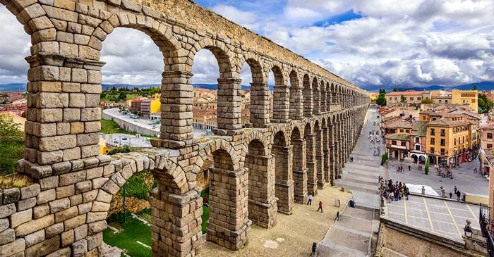
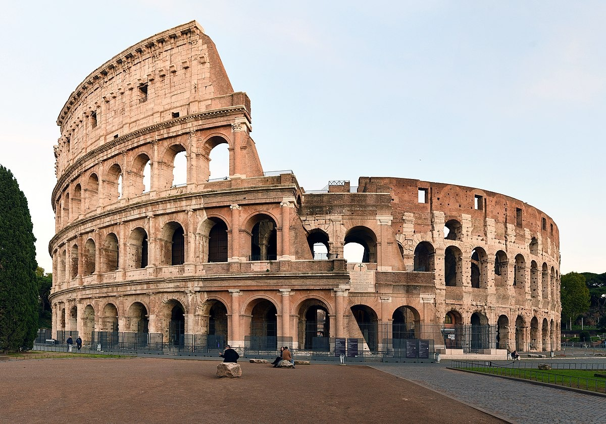
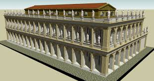
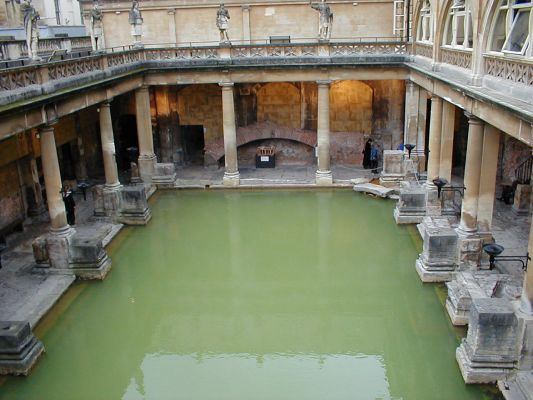

Salut! Astăzi vom vorbi despre arhitectura romană și minunățiile sale din perioada Antichității și curiozitățile sale din timpul construcției acestora.
1.Apeducte

Apeductul din Segovia are 167 de arcuri. Cu o înălțime de aproape 30 de metri, a fost un instrument esențial pentru transportul apei pe o distanță de 16.222 de metri, profitând de denivelările terenului și aprovizionând locuitorii orașului.
Construcția este împărțită în trei părți distincte. Zona extraurbană, de unde era colectată apa, zona periurbană, tronsonul de apeduct care transporta apa, și zona urbană, unde apa era nu doar transportată, ci și distribuită la destinație. Traseul intravilan a dezvoltat un sistem sofisticat de distribuție prin intermediul unor canale speciale, care la rândul lor erau subdivizate pentru a alimenta fântânile și bazinele caselor.
Apeductul din Skopje ar fi furnizat apă așezării legiunii din Scupi. Scupi a devenit casa multor veterani legiunari, fondată în timpul lui Domițian, în jurul anilor 81-96 d.Hr. Scupi a fost abandonată în anul 518 d.Hr., când un cutremur a devastat orașul.
Apeductul lui Dioclețian este un vechi aqueduct roman situat în apropiere de Split, Croația. A fost construit în timpul Imperiului Roman pentru a furniza apă palatului împăratului Dioclețian. Aprovizionarea cu apă era asigurată de Aqua Marcia.
Aquaductul lui Valens a fost un sistem de aqueduct roman construit la sfârșitul secolului al IV-lea d.Hr., pentru a alimenta cu apă Constantinopolul - capitala Imperiului Roman de Răsărit.
2.Arene

Amfiteatrul (grec. amphi - ambi, dublu, sau în jur, de jur împrejur și théātron adică "loc pentru vizionare") este un teatru de formă circulară lipsit de acoperiș.
Noțiunea de "dublu" se referă la forma teatrului antic grec, care avea o formă semicirculară. Amfiteatrul este un teatru dublu, deci două teatre semicirculare față în față.
Colosseumul este un monument istoric și turistic aflat în centrul Romei vizitat de foarte mulți turiști din toată lumea. El este probabil cea mai impresionantă clădire-ruină a Imperiului Roman. Acesta era cea mai mare construcție a vremurilor sale după piramide și astăzi este cel mai mare amfiteatru antic care poate fi vizitat in Italia.Colosseumul este situat la est de Forumul Roman. Construcția a început sub conducerea împăratului Vespasian în anul 72 d.Hr. și a fost finalizată în anul 80 d.Hr. sub conducerea succesorului și moștenitorului său Titus.
Odeonul lui Herodes Atticus din Atena
Acest teatru antic a fost construit in anul 161 d.Hde catre Herodes Atticus, un filosof, profesor si politician romanin memoria sotiei sale, Aspasia Annia Regilla, care decedase cu un an inainte.
3.Basilici

Bazilica (grec. bazilike - sală regală, lat. basilica domus) este o construcție de foarte mari dimensiuni, de plan rectangular și în care au loc adunări publice, se desfășoară judecăți, procese, piețe, sau târguri, ședințele Senatului. Prima bazilică a fost construită în anul 184 î.Hr.
Bazilica Iulia a fost construită pe locul vechii Bazilice Sempronia (170 î.Hr.) de-a lungul laturii sudice a Forumului, opusă Bazilicii Aemilia. A fost inițial dedicată în anul 46 î.Hr. de către Iulius Cezar, costurile de construcție fiind plătite din prada Războiului Galic, și a fost finalizată de Augustus, care a numit clădirea după tatăl său adoptiv.
Basilica Ulpia (Bazilica Ulpia) este o bazilică civilă construită în Roma între anii 107, data triumfului lui Traian pentru victoriile sale în Dacia și 112 d.Hr., data inaugurării Forului lui Traian. Planul bazilicii este probabil opera arhitectului Apolodor din Damasc (care a servit ca inginer-șef pentru Traian în timpul campaniilor din Dacia), dar rolul său in construcții nu este bine stabilit.
4.Bai termale

Bazele stațiunii Băile Herculane au fost puse în anul 102 d.Hr. de împăratul Traian, romanii introducând cultul balnear preluat de la greci pe care apoi l-au dezvoltat. Numele stațiunii de care este legat și numele societății noastre, vine de la zeul Hercules, fiul lui Zeus și al frumoasei Alcmena, consemnat în mitologia romană ca patron al izvoarelor termale, simbol al puterii și al echilibrului între forța fizică și cea spirituală.Romanii au construit aici, la Therme Herculi (Ad Aquas Herculi Sacras), temple, băi, monumente și statui, închinate zeilor Hercules, Esculap și Higeea.